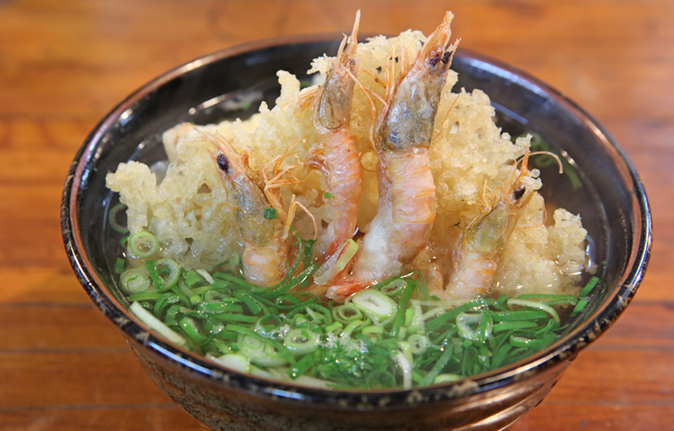

코끼리 모습의 절벽 만좌모
코끼리의 옆모습을 한 절벽'이라고 해서 더욱 유명해진 만좌모. 만명이 앉아도 될 만큼 큰 벌판이다'라고 해서 지금의 만좌모라는 이름이 붙여졌다고 합니다. 이곳 만좌모에서 바라보는 바다 역시 맑고 아름답기로 유명한데요, 만좌모의 절벽에는 울타리가 없거나 낮은 곳이 많습니다. 예쁜 사진을 찍는것도 좋지만, 너무 욕심을 부리다가 절벽아래로 떨어지는 사고가 일어날 수도 있으니 안전에 주의하시길 바랍니다!입이 떡 벌어지는 추라우미 수족관
오키나와의 앞바다에서 흔히 찾아볼 수 있는 산호초, 난류인 쿠로시오 해류속의 풍성한 어종 등, 다채로운 생물들을 사육하고 있으며 신비로운 오키나와 바다를 그대로 재현해놓았습니다. 수족관은 총 3층으로 바다 속 그대로의 모습으로 재현해 두었는데 아래 층으로 내려갈수록 더 깊은 바다 속으로 들어가는 듯한 기분이 듭니다. 얕은 여울에서 심해까지 깊이에 따라 바다생물이 달라지는 것을 볼 수 있으며 쿠로시오 바다 라는 이름의 대형 수조가 눈길을 끕니다. 높이 8.2m, 폭 22.5m, 두께 60㎝의 세계 최대급 수조인 이 수조에는 가장 큰 물고기인 고래상어를 세계최초로 사육하고 있습니다. 그 밖에도 각양각색의 열대어를 감상할 수 있는 열대어 바다, 대규모 산호를 전시하고 사육하는 코너가 있으며 성게나 불가사리, 해삼 등을 만져보는 체험도 할 수 있습니다.내손으로 직접 만드는 기념품 류큐 가라스 무라
오키나와에는 오래된 역사를 간직한 공예품이 많이 있지만, 전쟁후의 생활중에 생겨나, 오늘날에는 미술품으로서 인정받고 있는 공예품이 류큐 가라스 입니다. 이 기술은 주로 공중 블래스팅이라고 하는 방법으로, 녹인 유리를 철관의 앞부분에 당겨감아 공기를 불어넣어 부풀립니다.유리로 무거워진 긴 관을 두께가 균일해 지도록 돌려가면서 공기를 불어넣는 작업은 고도의 기술력이 필요하며, 장인으로 인정받기까지는 몇 년 이상의 시간이 걸립니다. 숙련된 장인의 기술로 만들어지며, 핸드메이드인 관계로 똑같은 것이 한 개도 없다는 것이 특징입니다.
오키나와에서 꼭 먹어야하는 음식
오키나와 명물 도넛 사타안다기
일본하면 역시 규 요리를 빼놓을 수 없어요. 특히 큐슈를 대표하는 소고기인 사가규는 사가현을 방뭄했다면 꼭 먹어봐야하는 맛이죠 사가현의 온화한 기후와 꺠끗한 물 그리고 맑은 공기 속에서 자란 소로만 만들어진 사가규는 일본 전국적으로도 알아주는 이름값 있는 소고기중 하나랍니다. 부드러운 고기 속에서 가늘게 지방이 썩이 질 좋은 사가규는 스테이크를 먹어도 좋고, 샤브샤브를 해서 먹어도 좋답니다.
갈비찜이야 뭐야? 라후테
라후테는 관광객과 현지인 모두에게 사랑 받는 오키나와 대표 돼지고기 요리이다. 라후테는 달짝지근한 간장 베이스에 삼겹살을 오래 졸여 만들며 입안에 사르르 녹는 부드러운 육질이 매력이다. 라멘에 고명으로 올라가는 차슈처럼 오키나와 소바에 고명으로도 곁들여 먹거나 밥 반찬 또는 맥주 안주로도 즐길 수 있다.
